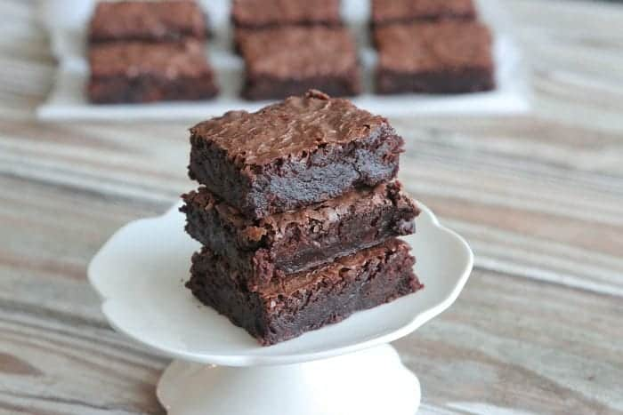

Panelas de alumínio de cor clara são as minhas favoritas para assar brownies. Eles aquecem rapidamente sem superaquecer e depois esfriam rapidamente uma vez removidos do forno, Vidro (como Pyrex) e cerâmica têm baixa condução de calor. Eu usei muitas panelas de pirex para assar brownies, mas tento grudar nas panelas antiaderentes de alumínio mais leves.
Panelas de alumínio de cor escura são um material muito comum. Ele funciona muito bem para assar brownies, mas como as cores escuras absorvem mais calor do que as claras, fique de olho nos brownies para evitar o excesso de cozimento.
As panelas de borda Brownie se tornaram muito populares. É a panela que oferece um pedaço de brownie de borda a cada quadrado. É uma panela de alumínio leve, então eu sou fã! Encontre-os na maioria das lojas Walmart e Target. A Amazon também é um ótimo lugar para encontrá-los.
 > Return <